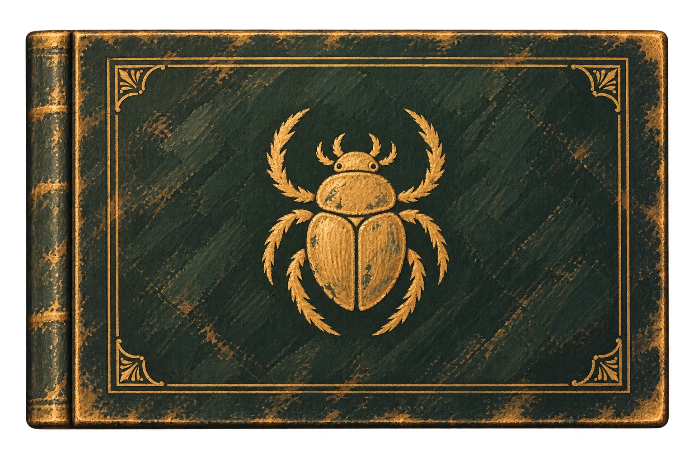

À propos
Créer avec curiosité.
Je crée des expériences numériques sensibles, claires et singulières.
Nour Tighza
Portfolio de Nour Tighza
Je crée des expériences numériques sensibles, claires et singulières.
Chargement des projets...
Après les projets
Quelques pages sur moi
À propos
Je crée des expériences numériques sensibles, claires et singulières.
Nour Tighza
Ce que j’apporte

La prochaine page
Je suis disponible pour discuter d’un projet ou d’une collaboration.
tighzanour@gmail.comÀ bientôt, Nour.
Fais glisser le décor pour découvrir les écrans →
Mini-jeux, applications et outils créés avec ChatGPT. Chaque panneau ouvre une nouvelle expérience.
Cet écran accueillera une expérience interactive. Elle présentera l’idée de départ, les prompts utilisés et les ajustements réalisés avec ChatGPT.